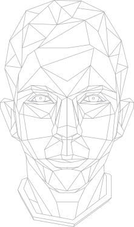

<!DOCTYPE html>
<html>
<head>
    <meta charset="utf-8">
    <title>Daniel Jelcic</title>
    <link rel="stylesheet" type="text/css" media="screen" href="main.css">
</head>
<body class="resume">
    <div class="navbar">
        <a href="index.html">Home</a>
        <a href="bio.html">About me</a>
        <a href="resume.html" class="active">Resume</a>
    </div>
    <div class="name-title">
        <h1>Daniel</h1>
        <h1 class="surname">Jelčić</h1>
    </div>
    
    <div class="main">
        <div class="contacts">
            <div class="contact-item">
                <div class="title">Email</div>   |   <a href="mailto:daniel.jelcic@tufts.edu">daniel.jelcic@tufts.edu</a>
            </div>
            <div class="contact-item">
                <div class="title">LinkedIn</div>   |   <a href="https://www.linkedin.com/in/danieljelcic/">danieljelcic</a>
            </div>
            <div class="contact-item">
                <div class="title">GitHub</div>   |   <a href="https://www.github.com/danieljelcic/">danieljelcic</a>
            </div>
            <div class="contact-item">
                <div class="title">Behance</div>   |   <a href="https://www.behance.net/danieljelcic/">danieljelcic</a>
            </div>
        </div>
        <h2>Education</h2>
            <h3>Bachelor of Science in Computer Science</h3>
                <h4>Tufts University, Class of 2021</h4>
                <h5>Course Highlights</h5>
                    <ul>
                        <li>Machine Structure and Assembly Language Programming</li>
                        <li>Data Structures</li>
                        <li>Computation Theory</li>
                        <li>Web Proramming</li>
                        <li>Discrete Mathematics</li>
                    </ul>
                <h5>Extracurricular Highlights</h5>
                    <ul>
                        <li>Head of Public Relations at Tufts International Club</li>
                        <li>Graphic Designer, Staff Artist at Tufts Observer</li>
                    </ul>
            <h3>International Baccalaureate Diploma</h3>
                <h4>United World College, Class of 2016</h4>
                    <h5>Course Highlights</h5>
                        <ul>
                            <li>HL [Higher Level] Mathematics</li>
                            <li>HL Physics</li>
                            <li>HL Visual Arts</li>
                        </ul>
                    <h5>Extracurricular Highlights</h5>
                    <ul>
                        <li>Head of Press at MUN in Mostar</li>
                        <li>Director of Technology; Founder at The Daily Krompeer</li>
                    </ul>
        <h2>Work Experience</h2>
            <h3>Studio Assistant</h3>
                <h4>Digital Design Studio, Tufts University</h4>
                <ul>
                    <li>Operated studio facilities including large format printers, 3D printers, digitization stations and a recording studio</li>
                    <li>Produced customer oriented graphics and web-apps for in-studio use</li>
                    <li>Aided and tutored customers in using the Adobe Creative Cloud Suite and other media production software</li>
                </ul>
            <h3>Communications Director</h3>
                <h4>UWC Austria Short Course, UWC Austria</h4>
                <ul>
                    <li>Created, maintained the organization’s visual identity and produced promotional material like booklets, merchandise, and posters in Illustrator and InDesign and a landing page with a blog</li>
                    <li>Planned, dispatched and monitored mlitiple marketing campaigns on the organization’s social media, local press and Facebook Ads</li>
                    <li>Documented the summer programme in photo, video and interviews</li>
                    <li>Facilitated the programme’s technical and audiovisual components</li>
                </ul>
            <h3>Events and Content Coordinator</h3>
                <h4>Communications Office, UWC Thailand</h4>
                <ul>
                    <li>Created and coordinated school’s official media campaigns for both the Thai and international audiences in print, audiovisual and interactive formats</li>
                    <li>Organized, supervised and promoted community events ranging from discussion panels to galas</li>
                    <li>Contributed to high-level leadership and parents’ council meetings</li>
                </ul>
            <h3>Graphic Designer</h3>
                <h4>Freelance</h4>
                <ul>
                    <li>Completed a wide variety of design projects in print (poster, book, pamphlet), promotional merchandise (clothing, stationary), social media content and visual identity formats for my extracurricliar and community organizations as well as for online clients worldwide, all using a variety of Adobe CC software
                </ul>
        <h2>Programming Projects</h2>
            <h5>Portable Pixmap Compressor / Decompressor [C]</h5>
                <p>Codec that handles portable pixmap images compressed into binary files up to 75% smaller in size</p>
            <h5>Universal Machine Emulator [C]</h5>
                <p>Utility that runs simple 14-instruction, Turing-complete Universal Machine programs on a Unix system</p>
            <h5>gerp [C++]</h5>
                <p>Rendition of the grep command-line utility for plain-text data set search</p>
            <h5>Unix 2048 [C++]</h5>
                <p>Popular sliding puzzle game ported for the Unix command line</p>
        <h2>Programming Languages</h2>
            <div class="skill-items">
                <div>C</div>
                <div>C++</div>
                <div>HTML</div>
                <div>CSS</div>
                <div>JavaScript</div>
                <div>x86 Assembly</div>
            </div>
        <h2>Software</h2>
            <div class="skill-items">
                <div>Illustrator</div>
                <div>Photoshop</div>
                <div>InDesign</div>
                <div>PremierePro</div>
                <div>After Effects</div>
                <div>Git</div>
                <div>Office</div>
                <div>Wordpress</div>
            </div>
        <h2>Languages</h2>
            <div class="skill-items">
                <div>English</div>
                <div>Croatian / Bosnian / Serbian</div>
                <div>Spanish</div>
                <div>German</div>
            </div>
    </div>
    <footer></footer>
</body>
</html>

